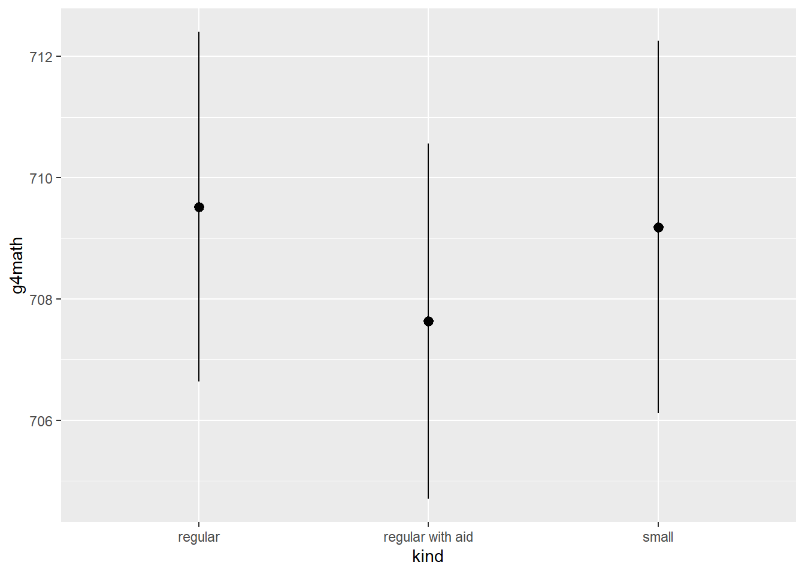
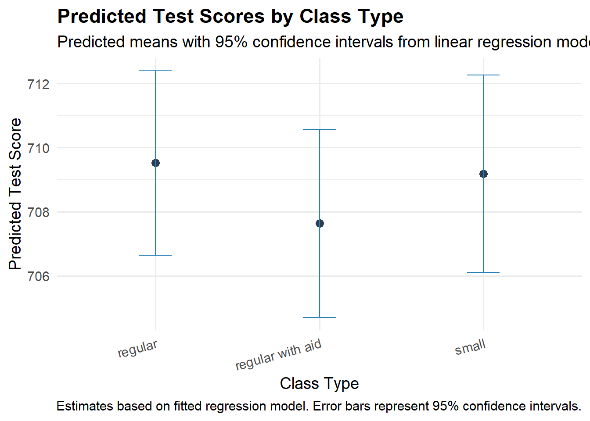
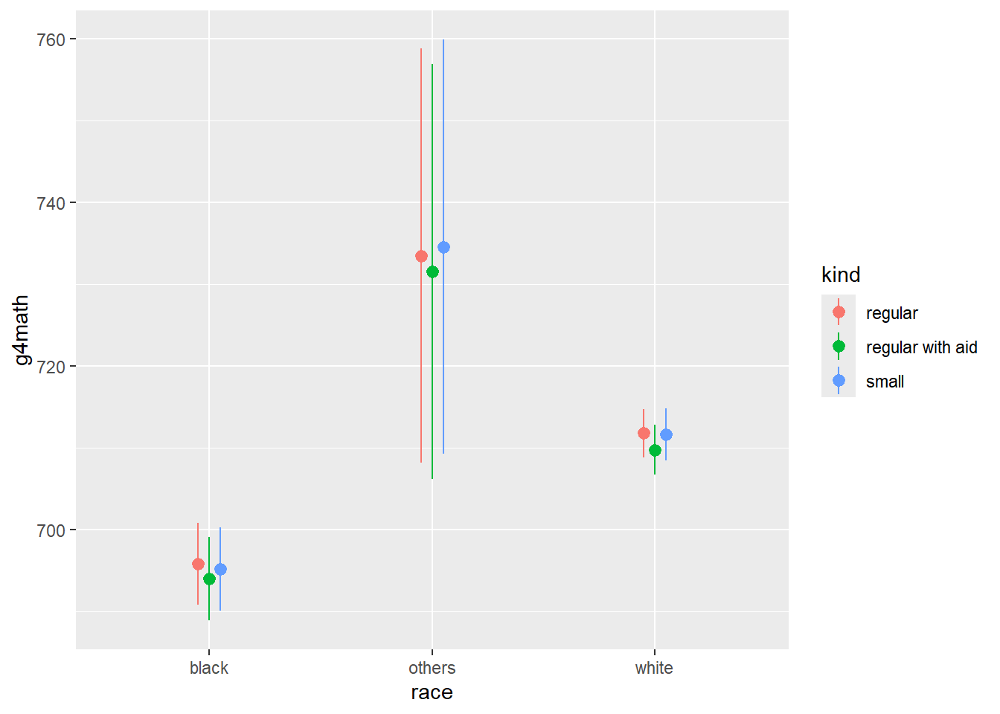
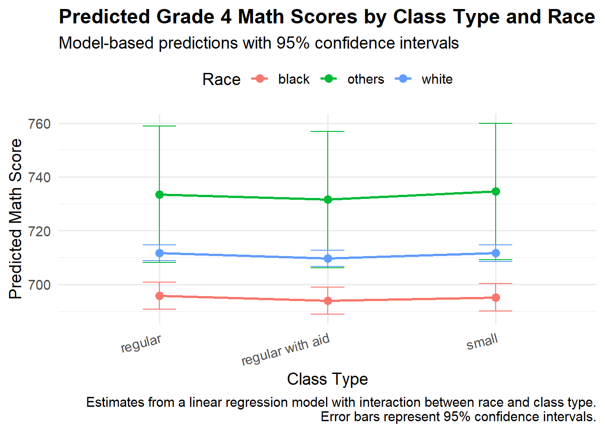

Warning: package 'purrr' was built under R version 4.5.1Warning: package 'gt' was built under R version 4.5.1Warning: package 'purrr' was built under R version 4.5.1Warning: package 'gt' was built under R version 4.5.1Note: Since there were very few data points for both “Hispanic” and “Other” students, we have combined these groups into a single “Others” category. Going forward, our analysis will use three race categories: ““White”, “Black”, and “Others”.
The Tennessee STAR dataset comes from a landmark randomized controlled experiment conducted in the 1980s to study the impact of class size on student achievement in early elementary school. Over 6,000 students in approximately 80 Tennessee schools were randomly assigned to one of three classroom settings from kindergarten through third grade: small classes (13–17 students), regular-sized classes (22–25 students), or regular-sized classes with a teacher’s aide. Students’ academic performance was tracked over several years, with a particular focus on standardized test scores in reading and mathematics. This dataset allows us to investigate how reducing class size affects academic outcomes and whether these effects differ by student characteristics such as race or socioeconomic status.
| Preceptor Table: Predicted 4th Grade Math Scores for 2029 in Chicago | ||||
|---|---|---|---|---|
| ID |
Predicted Outcomes
|
Covariates
|
||
| Predicted Math Score | Class Type | Race | Sex | |
| 1 | 715 | small | white | female |
| 2 | 684 | regular | black | male |
| … | … | … | … | … |
| 10 | 698 | small | black | male |
| 11 | 710 | regular with aid | white | female |
| … | … | … | … | … |
| N | 669 | small | black | female |
| Population Table: Predicting 4th Grade Math Scores by Student and Class Type for Chicago in 2029 | |||||||
|---|---|---|---|---|---|---|---|
| Source |
Unit & Time
|
Outcomes
|
Covariates
|
||||
| Year | Location | ID | Math Score | Class Type | Race | Sex | |
| Data | 1985 | Tennessee | 1 | 715 | small | white | female |
| Data | 1985 | Tennessee | 2 | 684 | regular | black | male |
| … | … | … | … | … | … | … | … |
| Preceptor Table | 2029 | Chicago | 10 | ? | small | black | male |
| Preceptor Table | 2029 | Chicago | 11 | ? | regular with aid | white | female |
| … | … | … | … | … | … | … | … |
| Preceptor Table: Dallas, TX, 2025: Potential Math Scores Under Each Class Type Assignment | ||||
|---|---|---|---|---|
| ID |
Potential Outcomes1
|
Assigned Class Size | ||
| Math if Small Class | Math if Regular Class | Math if Regular w/ Aid | ||
| 1 | 740 | 725* | 728* | Small |
| 2 | 701* | 689 | 695* | Regular |
| … | … | … | … | … |
| 10 | 730 | 715* | 719* | Small |
| 11 | 720* | 702 | 715* | Regular |
| … | … | … | … | … |
| N | 695* | 680* | 684 | Regular with aid |
| 1 A * indicates a potential outcome which we do not observe for that student. | ||||
| Population Table: Dallas, TX (2025) — Potential 4th Grade Math Scores by Class Assignment | |||||||
|---|---|---|---|---|---|---|---|
| Source |
Unit & Time
|
Potential Outcomes1
|
Covariates
|
||||
| Year | Location | ID | Math if Small Class | Math if Regular Class | Math if Regular w/ Aid | Assigned Class Size | |
| Data | 1985 | Tennessee | 1 | 740* | 725 | 728* | Regular |
| Data | 1985 | Tennessee | 2 | 701 | 689* | 695* | Small |
| … | … | … | … | … | … | … | … |
| Preceptor Table | 2025 | Dallas, TX | 10 | 730 | 715* | 719* | Small |
| Preceptor Table | 2025 | Dallas, TX | 11 | 720* | 702 | 715* | Regular |
| … | … | … | … | … | … | … | … |
| 1 A * indicates a potential outcome which we do not observe for that student. | |||||||
Fit a linear regression model in which math score (g4math) is the outcome, and the predictors are class type (kind), race, and years spent in small classes (yearssmall). Fit this model to an object named fit_cs.
After fitting the model, run fit_cs and be sure to display the confidence intervals.
# A tibble: 6 × 7
term estimate std.error statistic p.value conf.low conf.high
<chr> <dbl> <dbl> <dbl> <dbl> <dbl> <dbl>
1 (Intercept) 695. 2.60 267. 0 690. 700.
2 kindregular with aid -1.95 2.10 -0.929 3.53e- 1 -6.07 2.17
3 kindsmall -7.66 4.22 -1.82 6.94e- 2 -15.9 0.609
4 raceothers 38.7 13.1 2.96 3.09e- 3 13.1 64.3
5 racewhite 16.3 2.47 6.59 5.36e-11 11.4 21.1
6 yearssmall 2.18 1.06 2.05 4.03e- 2 0.0962 4.27 Give the R code you used to fit your regression model to AI and ask it to create a LaTeX version of the regression equation that matches your model. Paste the LaTeX equation from AI below.
\[ \hat{Y} = 695.00 - 1.95 \cdot \text{kind}_{\text{regular with aid}} - 7.66 \cdot \text{kind}_{\text{small}} + 38.70 \cdot \text{race}_{\text{others}} + 16.30 \cdot \text{race}_{\text{white}} + 2.18 \cdot \text{yearssmall} \]
Start writing summary paragraph. (AI may be helpful for individual sentences but won’t give you a paragraph at once.)
Generate predicted scores for all students in the data. What does each row in the output represent?
Individual Students
Estimate Std. Error z Pr(>|z|) S 2.5 % 97.5 %
693 2.63 263 <0.001 Inf 688 698
709 1.57 451 <0.001 Inf 706 712
696 2.61 266 <0.001 Inf 691 701
712 1.64 434 <0.001 Inf 709 715
712 1.64 434 <0.001 Inf 709 715
--- 2385 rows omitted. See ?print.marginaleffects ---
693 2.63 263 <0.001 Inf 688 698
709 1.57 451 <0.001 Inf 706 712
715 2.33 307 <0.001 Inf 711 720
709 1.57 451 <0.001 Inf 706 712
706 3.34 211 <0.001 Inf 699 712
Type: numericGenerate predictions by class type (kind).
kind Estimate Std. Error z Pr(>|z|) S 2.5 % 97.5 %
regular 710 1.47 482 <0.001 Inf 707 712
regular with aid 708 1.50 473 <0.001 Inf 705 711
small 709 1.57 452 <0.001 Inf 706 712
Type: numericVisualize average predicted math score by class type using plot_predictions().

The default plot_predictions() plots can be boring or hard to read. To create your own custom plot, start by extracting the prediction data using the draw = FALSE option. Save the resulting tibble as pred_data. Run pred_data to see the output.
kind estimate std.error statistic p.value s.value conf.low
1 regular 709.5214 1.470890 482.3757 0 Inf 706.6385
2 regular with aid 707.6335 1.496451 472.8744 0 Inf 704.7005
3 small 709.1851 1.569129 451.9611 0 Inf 706.1097
conf.high df
1 712.4043 Inf
2 710.5664 Inf
3 712.2606 InfGive AI the output of pred_data and ask it to make a nice looking plot. Make sure that it has an accurate title, subtitle, axis labels, and caption. Paste your plot in the code chunk below.

What does this plot tell you about the effect of class types on student g4math scores?
There is no as such any effect of class size on g4math scores.
Start experimenting with more detailed plots. Visualize predicted math scores by class type and race. Just use the basic plot_predictions() for now.

Now use plot_predictions() with draw = FALSE to get the raw predictions by class type. Save the resulting tibble as pred_data2. Run pred_data2 to see the output.
race kind estimate std.error statistic p.value s.value conf.low
1 black regular 695.8018 2.564951 271.27291 0 Inf 690.7746
2 black regular with aid 693.9298 2.598438 267.05655 0 Inf 688.8369
3 black small 695.1522 2.610927 266.24729 0 Inf 690.0349
4 others regular 733.5045 12.924048 56.75502 0 Inf 708.1739
5 others regular with aid 731.5541 12.940245 56.53325 0 Inf 706.1917
6 others small 734.5799 12.931110 56.80718 0 Inf 709.2354
7 white regular 711.7697 1.516691 469.29116 0 Inf 708.7970
8 white regular with aid 709.7522 1.536505 461.92637 0 Inf 706.7407
9 white small 711.6202 1.617380 439.98333 0 Inf 708.4502
conf.high df
1 700.8291 Inf
2 699.0226 Inf
3 700.2696 Inf
4 758.8352 Inf
5 756.9165 Inf
6 759.9244 Inf
7 714.7423 Inf
8 712.7637 Inf
9 714.7903 InfTake the output from pred_data2 and provide it to AI. Ask it to make a high-quality plot with a descriptive title, subtitle, caption, and labels. Paste your new plot below:

After finalizing your summary paragraph, paste it in the section below: We are trying to understand student’s performance in small classes when compared to large classes based on g4math scores, accounting for race.
Uisng the STAR Project dataset, we are attempting to determine if small classes have a positive effect on g4math score in Dallas. We examined that class size does not have any major effect on g4mathscore, might be its due to the race.
Frederick Mosteller (1995) “The Tennessee study of class size in the early school grades.” The Future of Children, vol. 5, no. 2, pp. 113–127. Data cleaned and discussed in “Quantitative Social Science: An Introduction” by Kosuke Imai.
The Tennessee class size project is a three-phase study designed to determine the effect of smaller class size in the earliest grades on short-term and long-term pupil performance. The first phase of this project, termed Project STAR (for Student-Teacher Achievement Ratio), was begun in 1985, when Lamar Alexander was governor of Tennessee. Governor Alexander, who later served as secretary of education in the cabinet of President George Bush, had made education a top priority for his second term.
The legislature and the educational community of Tennessee were mindful of a promising study of the benefits of small class size carried out in nearby Indiana, but were also aware of the costs associated with additional classrooms and teachers. Wishing to obtain data on the effectiveness of reduced class size before committing additional funds, the Tennessee legislature authorized this four-year study in which results obtained in kindergarten, first, second, and third grade classrooms of 13 to 17 pupils were compared with those obtained in classrooms of 22 to 25 pupils and in classrooms of this larger size where the teacher was assisted by a paid aide. Both standardized and curriculum-based tests were used to assess and compare the performance of some 6,500 pupils in about 330 classrooms at approximately 80 schools in the areas of reading, mathematics, and basic study skills. After four years, it was clear that smaller classes did produce substantial improvement in early learning and cognitive studies and that the effect of small class size on the achievement of minority children was initially about double that observed for majority children, but in later years, it was about the same.
The second phase of the project, called the Lasting Benefits Study, was begun in 1989 to determine whether these perceived benefits persisted. Observations made as a part of this phase confirmed that the children who were originally enrolled in smaller classes continued to perform better than their grade-mates (whose school experience had begun in larger classes) when they were returned to regular-sized classes in later grades. Under the third phase, Project Challenge, the 17 economically poorest school districts were given small classes in kindergarten, first, second, and third grades. These districts improved their end-of-year standing in rank among the 139 districts from well below average to above average in reading and mathematics. This article briefly summarizes the Tennessee class size project, a controlled experiment which is one of the most important educational investigations ever carried out and illustrates the kind and magnitude of research needed in the field of education to strengthen schools.